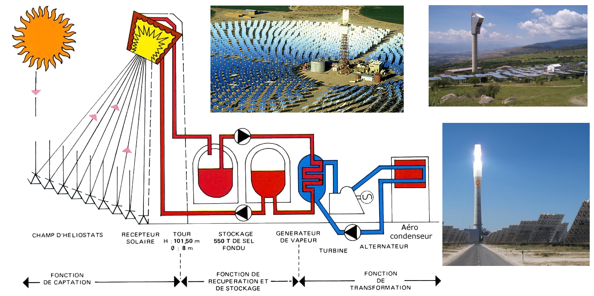
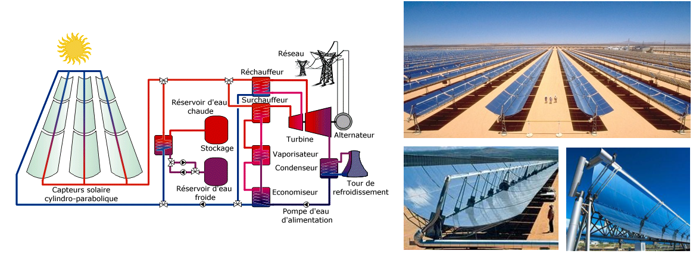
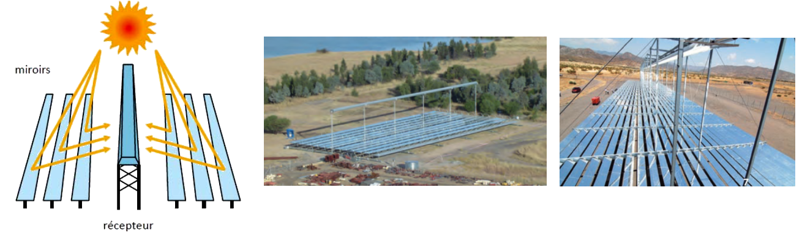

Les centrales solaires thermiques
Enjeux
Les panneaux solaires photovoltaïques ont des
rendements de 15% environ. Or les centrales thermiques
au charbon ont des rendementsde 40%. Est-il possible
de réaliser des centrales thermiques solaires avec un
aussi bon rendement ?
Types de centrales solaires thermiques
- Centrale à tour

- Centrale parabolique

- Centrale à miroir de Fresnel

Réalisations
Ivanpah
Noor
Aspects techniques
Turbine